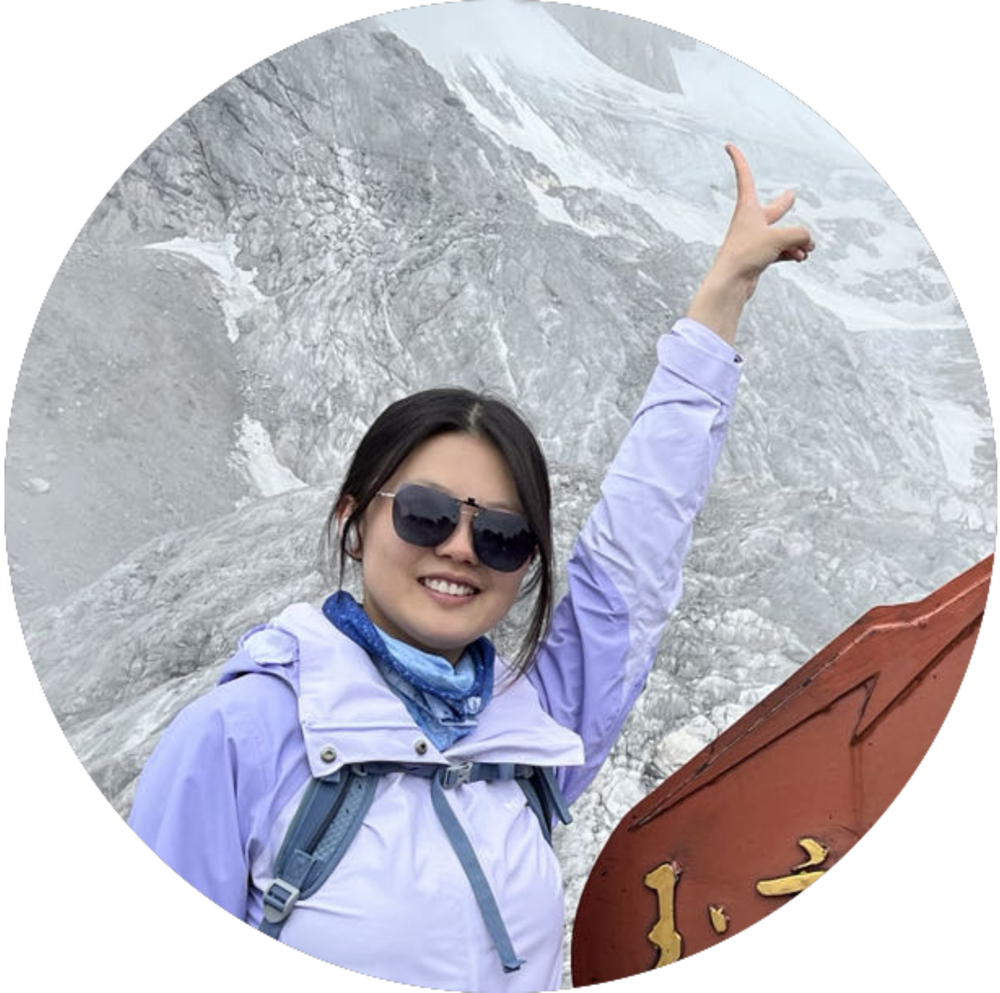
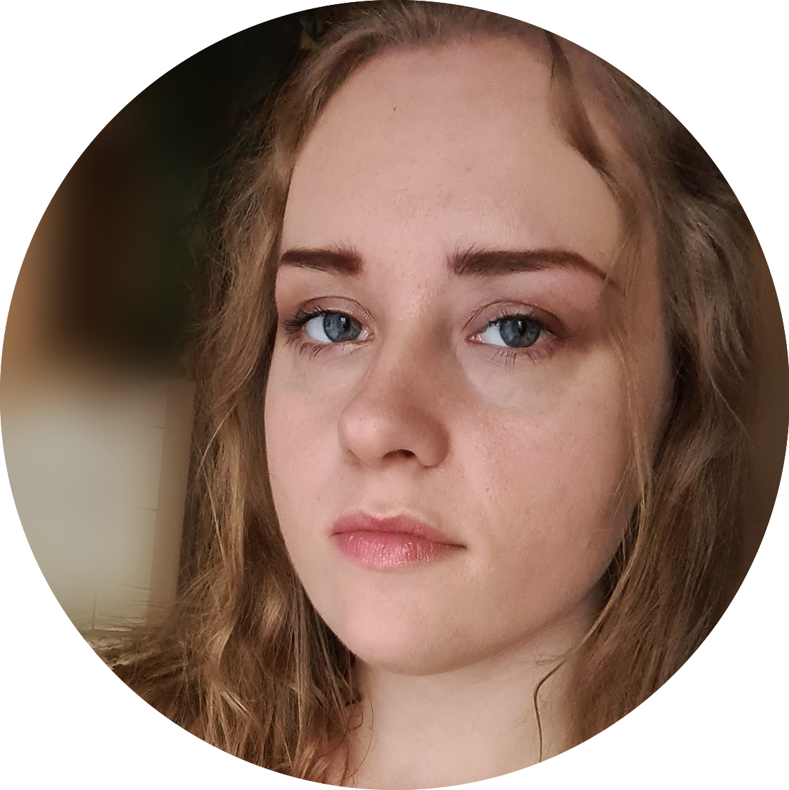
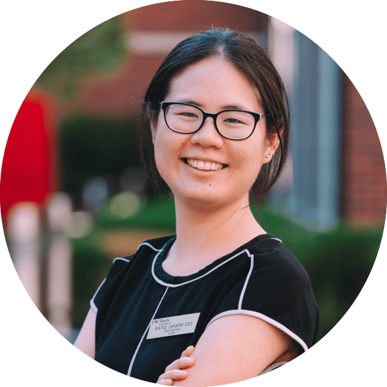
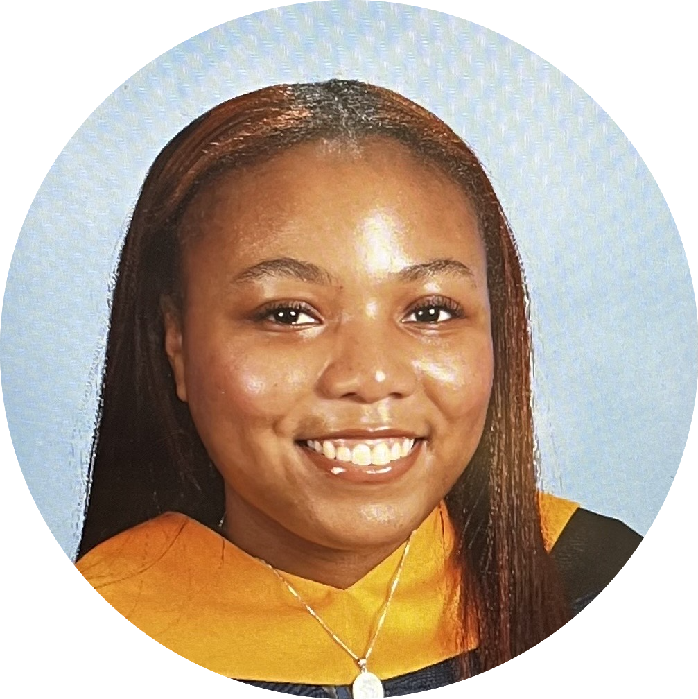

Bingfei is an Assistant Professor in the Department of Molecular Microbiology and Immunology at the University of Southern California (USC). She is also affiliated with the Alfred E. Mann Department of Biomedical Engineering and the Norris Cancer Center. Bingfei earned her Ph.D. at the University of California, San Diego (UCSD) and completed her postdoctoral research at Stanford University. She is a recipient of the Parker Bridge Fellow and V scholar award.
Hobbies: exploring boba teas and spicy food, karyoke, pop music, and badminton.
Jing Hu, Ph.D.
Research Associate
Jing completed his Ph. D. of Basic Medicine in Shanghai Jiao Tong University school of medicine. During his doctoral research, he explored the molecular mechanism of Stk40 in embryo development and skeletal muscle differentiation. He also developed and optimized new gene-editing tools for lncRNA tracing and cell therapy.
Hobbies: Soccer, traveling and exploring food

Shuo Wang, M.D.
Postdoctoral Researcher
Shuo completed her MD degree and first-round of postdoctoral research training at Shanghai Jiao Tong University School of Medicine. During her training, she led a multicenter real-world study describing the outcomes of DLBCL patients and developed a clinically available model to classify the tumor microenvironment in DLBCL patients using digital pathology.
Hobbies: Jazz, hiking, pickle ball, and working out

Jessica N. Haladyna M.D.
CHLA Fellow
Jessica received her medical degree from Georgetown University School of Medicine in Washington, DC. In medical school, Dr. Haladyna joined the lab of Jeffrey Toretsky, MD exploring mechanisms of action for a novel therapeutic agent used in the treatment of Ewing Sarcoma.
Hobbies: Anything active and in the sunshine! Bucket list: ride a 3+ person bicycle, slip ‘n slide baseball/kickball game, Rugged Maniac/ Warrior Dash, multi-pitch climbing abroad.

Laura Yang
Ph.D. candidate in PIBBS Program
Laura Yang earned her B.A. in Cellular and Molecular Biology with a minor in Computer Science from Bowdoin College in Maine. During her undergraduate years, she engaged in diverse basic science research—from studying Drosophila evolution using ATAC-seq to investigating the cellular adhesion pathways in Arabidopsis thaliana.
Hobbies: Volleyball, Badminton, Tennis, Basketball...watching and playing all types of sports!

Karolina W. Warzecha, M. S.
Ph.D. candidate in PIBBS program
Co-mentored with Dr. David Tran
Karolina earned her B.S. in Neurobiology and M.S. in Molecular Biotechnology from Jagiellonian University in Poland. During that time she studied the role of neurotrophic factor DmMANF in glial cells in the context of circadian rhythms, and then she has transitioned into cancer biology and investigated the influence of metabolic modulators on microevolution of cancer cells.
Hobbies: violin, water sports, cinema, fantasy, music

Katie Cui
Ph.D. student in the BME program
Co-mentored with Dr. Peter Wang
Katie completed her B.S. in Chemical Engineering at University of Southern California. She currently also serves as a senator on the USC Graduate Student Government, acting as the liaison between engineering graduate students and the Viterbi School of Engineering.
Hobbies: running, pilates, singing, and watching YouTube

Garrett Heisinger
M.S. Student
MMI program
Garret completed his B.S. in Biological Sciences at University of Southern California. A leukemia survivor himself, Garrett hopes to one day attend medical school and become an oncologist. He is passionate about researching new ways of detecting and treating cancer, especially involving CAR T-cell therapy.
Hobbies: I like going to the gym, going on hikes, and playing sports like ultimate frisbee, spikeball, beach volleyball, and football with my friends.

Deja Gaines
M.S. student in MMI program
Deja completed her B.S. degree in Biology at the Howard Univeristy. She is passionate about research in autoimmune diseases, with a particular focus on those that affect children.
Hobbies: Trying new foods, running and staying active, working as a nanny, and teaching kids about science
Alumni
- Zilin Zhang, Research Technician
- Salim Muhammed, CHLA SORF Summer Student
- Eric Abnoosian, Master Student